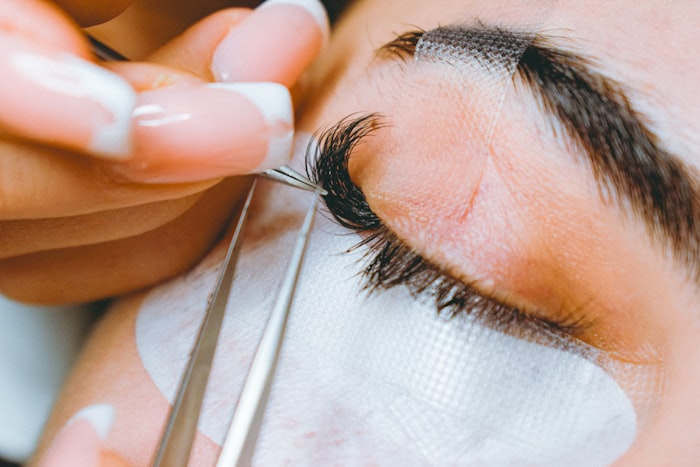
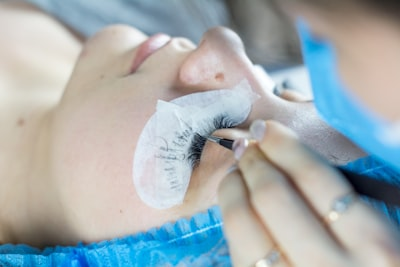
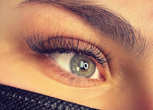
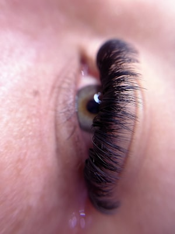
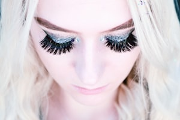
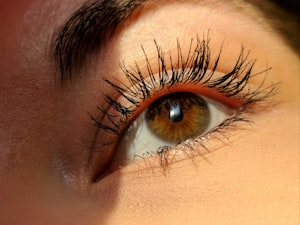

Mariana Alves
Lash Designer
São Paulo — SP
Índice

Há sete anos desenhando olhares. Cada extensão nasce de uma leitura do formato dos olhos, do fio natural e da rotina de quem senta na maca — nunca de um modelo pronto.
Trabalho com técnicas seguras, fios de peso calculado e materiais hipoalergênicos. O compromisso é duplo: um resultado que devolve autoestima e uma saúde dos cílios naturais preservada a cada manutenção.
Atendimento individual, por hora marcada

Fios mais longos no centro do olho. Abre o olhar e deixa a expressão redonda, doce.

Alongamento progressivo até o canto externo. Puxa o olhar para cima, com ar felino.

Pico deslocado do centro para fora. Levanta a pálpebra sem perder naturalidade.
Valores em reais. Manutenção indicada entre 15 e 20 dias.
Um fio de extensão para cada fio natural. Efeito discreto, de máscara leve.
manut. 90Fios em Y trançados no natural. Densidade média com leveza.
manut. 90Leques abertos em camadas. O mais preenchido da carta.
manut. 90Mistura de fio a fio e leques. Textura irregular, viva.
manut. 90Mapping alongado no canto externo, olhar puxado e alinhado.
manut. 90Curvatura do fio natural, sem extensão. Dura de 6 a 8 semanas.
manut. 90Retirada segura das extensões com removedor em gel.
sessão únicaDuração: 1h a 1h30 para cílios; 2h para o combo com design de sobrancelhas.
Janela ideal
15—20 dias
Após 25 dias
valor reajustado
Duração
1h—1h30
Remoção
R$ 100
A manutenção repõe os fios que caíram com o ciclo natural. Passado o prazo, o trabalho volta a ser uma aplicação completa e o investimento acompanha.
Envio de mensagem no WhatsApp com o procedimento desejado; devolvo os horários livres da semana.
Confirmação obrigatória um dia antes do atendimento. Sem confirmação, o horário é liberado.
Tolerância de 15 minutos de atraso. Depois disso, o atendimento é remarcado.
Chegue sem maquiagem nos olhos e evite cafeína antes da sessão.
Pagamento
Dinheiro, Pix,
débito e crédito
Estúdio
Rua das Acácias, 412
sala 7 — Pinheiros
Cinco hábitos que dobram a durabilidade.
Nas primeiras 24 horas, nada de água, vapor ou calor direto nos cílios.
Higienize com shampoo próprio e escove os fios todos os dias.
Sem máscara de cílios, demaquilante oleoso ou curvex.
Durma de lado ou de costas — evite amassar os fios no travesseiro.
Nunca puxe ou arranque uma extensão; a remoção é sempre no estúdio.

Mariana Alves — Lash Designer
Dossiê nº 01 · Edição 2026